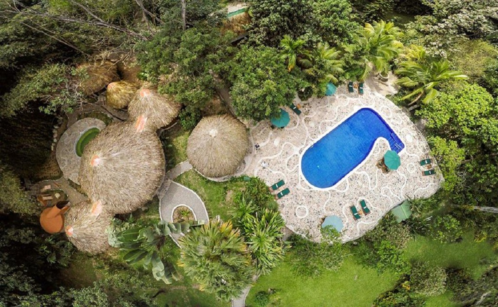
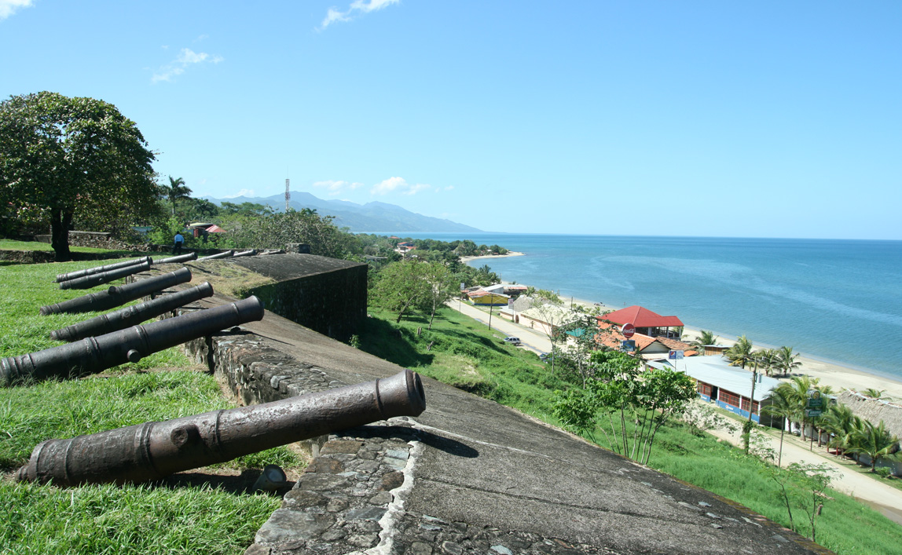

Honduras es el centro turistico del mundo!!






Copán Ruinas
5 de Marzo del 2018
San Pedro sula, Cortés
 Copán es un sitio arqueológico de la antigua civilización maya ubicado en el departamento de Copán al occidente de Honduras, a poca distancia de la frontera con Guatemala. Del siglo v al siglo ix fue la capital de un importante reino del periodo Clásico. La ciudad estaba situada en el extremo sureste de la región cultural Mesoaméricana, en la frontera con la región cultural istmo-colombiana, en una zona habitada por pueblos que no pertenecían a la etnia maya.1 En la actualidad este valle fértil contiene un centro urbano de alrededor de 3000 habitantes, un pequeño aeropuerto y una carretera sinuosa.
Copán es un sitio arqueológico de la antigua civilización maya ubicado en el departamento de Copán al occidente de Honduras, a poca distancia de la frontera con Guatemala. Del siglo v al siglo ix fue la capital de un importante reino del periodo Clásico. La ciudad estaba situada en el extremo sureste de la región cultural Mesoaméricana, en la frontera con la región cultural istmo-colombiana, en una zona habitada por pueblos que no pertenecían a la etnia maya.1 En la actualidad este valle fértil contiene un centro urbano de alrededor de 3000 habitantes, un pequeño aeropuerto y una carretera sinuosa.La ocupación humana del sitio se extiende por más de dos milenios, desde el Preclásico Temprano hasta el Posclásico. La ciudad desarrolló un estilo escultórico distintivo dentro de la tradición de los mayas de las tierras bajas, tal vez para destacar el origen maya de los gobernantes de la ciudad.